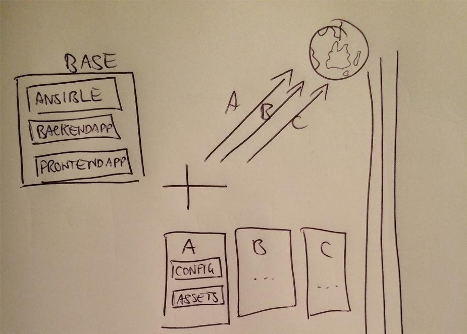
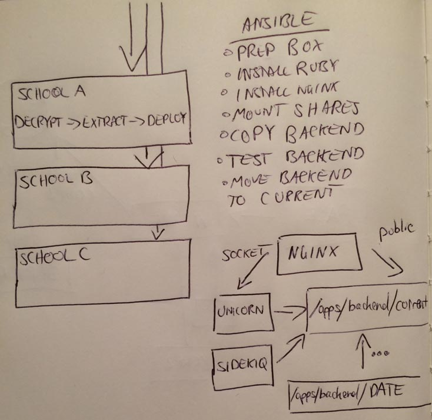

I'm currently working on a product that is hosted on the premises of our education customers, it depends on access to a school's network shares and internal databases. Being a school they each have their own incredibly interesting and at times oddly configured network configurations, but one thing is common: the box is usually behind a frontend proxy and the only way in is via VPN.
The traditional Rails deployment way via Capistrano just does not cut it, these schools have differing VPN solutions from Cisco and Microsoft. Some work with the standard VPN client that ships with OS X and some require you install some a third-party client. It's incredibly complicated to somehow automate a way to switch between VPN configurations for each Capistrano push.
As some VPN policies mandate your entire network go over their VPN during the session you may end up dealing a HTTP proxy. Too bad if some of your Gems have been configured to pull over SSH.
This is all too hard in it's current state, we needed to switch from a push scenario to our servers being in a pull scenario.
Our pull scenario has allowed us to focus on application deployment at incredible speeds. We no longer need to take 30 minutes out of our days to switch to a VPN configuration and run Chef and Capistrano tasks. We now just promote our staging branch to production, our build server builds the packages and our clients will be brought up the latest version when school finishes. There's no Friday afternoon deployment angst.
The application
As a background, the application is a fairly straightforward Rails API application. It has a configuration file that enables various features and specifies the LDAP authentication source; it is something that changes from client to client.
The application also serves out the public/ directory which provides a frontend Angular application that communicates with the API provided by the backend. The frontend requires no configuration as it pulls its configuration on pageload from the API.The frontend does require visual customisation in the form of replacing logos and favicons.
So our application is pretty easy to customise per client, processes just need to be in place that replace or copy in client specific files. The application itself can customise itself through various rake tasks.
Packaging

With weave we are building deployment packages for each our client's environments. Bundling the Ansible playbook, backend application and frontend web application into one package allows each of the client's servers to poll S3 for a new file, download it, extract it and execute the first task.
Our CI server doesn't need to worry about various VPN configurations, it pushes all of the client's packages up to S3 whenever a new production build is successfully completed. Its job is done, and its up to the clients to pull down the packages outside of school hours
Because database configuration, settings and styling differ from school to school weave is perfect for merging the customisations into the final packages. We only need to mimic the directory structure in our weave project and the project files will override the original packages
Our base looks something like this:
- playbook.yml
- post_extraction.sh
- files/
- backend_app/
- app/
- config/
- frontend_app/
- public/
- config/
- backend_app/
As for our weave configurations directory:
- schoolA
- files/
- backend_app/
- config/
- database.yml
- config.yml
- config/
- frontend_app/
- public/
- logo.png
- favicon.ico
- public/
- backend_app/
- files/
- schoolB
- ....
- schoolC
- ....
For each configuration (schoolA, schoolB, schoolC) weave will produce a package which is the union of the base directory and that configuration directory. Configuration directories will be merged last, meaning they will override files such as customised assets or configuration files.
Before we generate the packages on the build server we perform a full bundle install --deployment on the base package, which allows us to ensure the app ships with the gems and binaries out of the box. The target servers never need to run bundle install or deal with proxy issues.
Ansible

Ansible provides us with the automation to not only move our application into place but also bring the target system up to the expected level.
Ansible in our use replaces both Chef and Capistrano. While it is usually case that you want Chef/Ansible/Puppet performing your system deployment and Capistrano performing your application deployment we find that coupling the process together allows us to have a central point for configuring what happens after weave extracts on the target system.
I forced the switch to Ansible from Chef to reduce complexity that seems present in Chef. With Ansible you're usually just dealing with YAML files, there's no complicated programming - what you type is usually hope the task will execute. Our team is a mix of developers who have not touched Ruby so it's unfair in the heat of the moment for them to deal with a deployment process and figure out this programming language at the same time.
I was unimpressed with the magic that comes from Chef. When including recipes from Berkshelf it was unclear how these various function names were being defined, you could not search for the name that was being generated from the relevant filename. What added to the complexity was the array of folders Chef has: cookbooks, roles, recipes. In our Ansible project we have a folder called roles, and each role then has one or more tasks; it's incredibly simple and easy to follow.
We replaced Capistrano because it seems to lack the ability to run on the localhost without the need for SSH. Ansible can execute commands in the current process or you can go back to the usual SSH process. For an agent like setup we prefer the current process way.
After weave has extracted the new package, it invokes post_extraction.sh which ensures Ansible is installed and then runs the Ansible playbook.
- Ensure the essential Ubuntu packages are installed (Samba, FreeTDS, Redis, Git, ImageMagick)
- Check for Ruby and Nginx
- Compile and make Ruby and Nginx
- Create the appropriate users and copy across the developer keys into authorized_keys
- Mount any SMB shares
Our Ansible playbook then moves into operating more like a Capistrano process:
- Deploy the Nginx site pointing to the Unicorn socket and public directory
- Copy the Rails backend_app/ from the files/ directory into /apps/backend/DATE
- Copy the frontend_app/public into the /apps/backend/DATE/public directory
- Perform the Rails database creation/migrations
- Check this newly deployed app passes integrity checks (Database comms)
- Move the newly deployed to /apps/backend/current
- Installs the cronjobs from whenever
- Restart Unicorn and Sidekiq
With Ansible we have recreated Capistrano, and we think it's for the better. We have complete control over the deployment process and know exactly how it will be carried out.
Bootstrapping
When a new client is brought on board we need to configure their server for pulling down their specific package. To aid this process we have developed a bootstrap script that walks the deploying engineer through the steps of getting weave into a cron task.
It's a fairly basic Bash script that covers the following:
- Asks for the name of the client
- Checks there is a package on S3 for that client
- Asks for the decryption key
- Asks to confirm or replace the cron job schedule (before school and after school)
- Installs weave
- Installs the cron job
We now have a functioning target that will periodically check in and automatically install our package.
Wrapping up
So we have a complete deployment "pipeline" that is mostly handsfree, especially for those developers that may be busy on other projects and don't want to waste time wrestling with remote servers.
We push to production, our CI server builds the packages for our clients. Our clients pull the latest package down when ready, prep themselves and then move the latest application into place.
Any questions? Hit me on @callumj or contact@callumj.com.